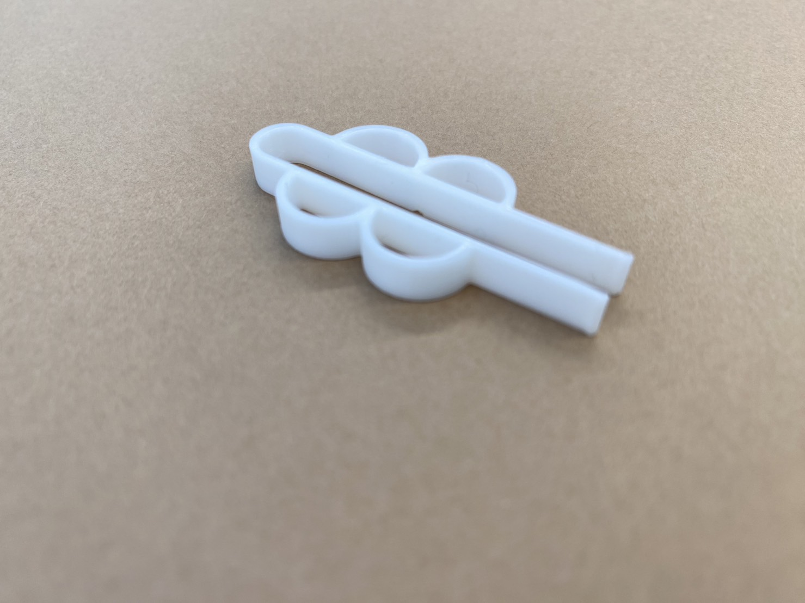

サポートピンセット
スケッチ
実物

設計ファイル
pinset
作品の説明
子ども用のトレーニング箸をモデルにしました。（参考：
スケーター株式会社 デラックストレーニング箸
）
スタンダードなピンセットに指を入れられる穴を作ることで、それが補助となり細かい作業が楽になるように設計しました。さらに、右利きの人も左利きの人も使えるような、左右対称のデザインにしました。
規定のサイズに収めると指が入りませんでしたが、穴の間のくぼみが滑り止めのような役割を果たし、使いやすい物にはなりました。
動機
ピンセットを使う場面というのは、細かい作業が求められるときが多いです。そのような作業を「楽にできないか」と考えたとき、ピンセットを使うことにおいて手が滑るというストレスなく使える物を作りたいと思いました。
制作プロセス中に調べたこと
導入として、スタンダードなピンセットをスケッチする際に参考にした動画です。
Fusion 360 を使用してピンセットを設計する/Desktop Makes
使用中の動画